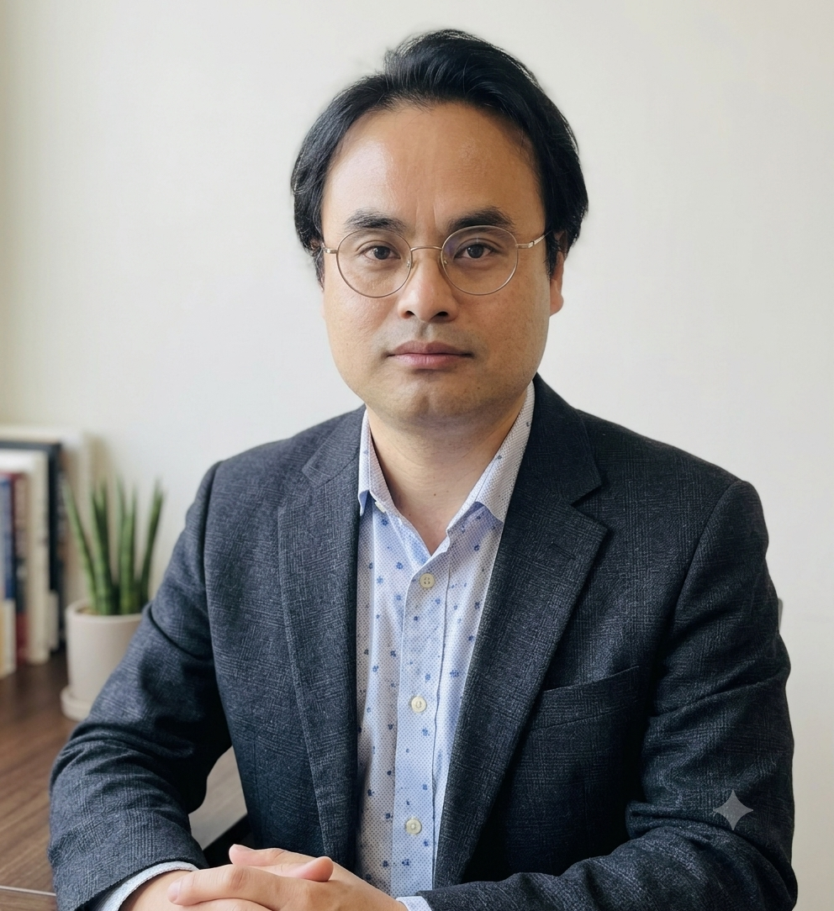

발표 소개
24시간 365일 중단 없는 서비스를 구축해온 게임 서버 개발자의 경험을 바탕으로, 라즈베리파이5와 Python 기반 엣지 AI 디바이스의 24/365 생존기를 공유합니다.
- Python
- RPi5
- Edge AI
- Physical Computing
연사 소개

김도혁
프로 메이커스 협동 조합 팀장 / 모두의연구소 Hell Maker LAB 랩장
김도혁은 게임 서버 개발자로 근무하며 탄탄한 기술력을 쌓아왔다. 동시에 서울 양재동 옥탑방에서 '헬 메이커' 플랫폼을 운영하는 창의적인 1인 메이커로 활동하며, Python과 피지컬 컴퓨팅을 접목한 다양한 프로젝트를 수행하고 있다. 특히 사회 문제 해결에 깊은 관심을 가지고 기술을 통한 긍정적인 변화를 꿈꾼다. 수년 전부터 인공지능 분야에 꾸준한 관심을 기울이는 동시에, 시카고 대학 추천 도서 100권 읽기에 도전하며 인문학적 소양을 넓히고 있는 다재다능한 융합형 인재이다.